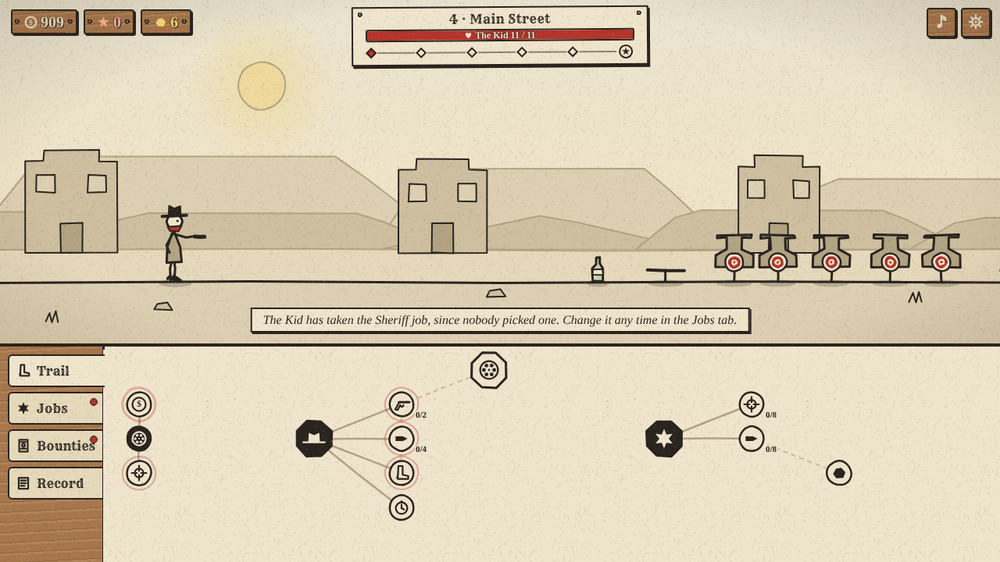

Just Keep Drawing
A drawfast game · press kit

About
Just Keep Drawing is a western, mostly.
You are the Stranger on the ridge, off screen, with a mouse and a gun that holds two rounds. A kid with nowhere to be walks west and shoots whatever is in front of him. You cover him: shoot what he can’t hit (anything in the air), what is reaching for a gun, and the bottles on the fence that somebody behind it keeps putting back up. Everything pays. Spend it on the trail, on special rounds for your revolver, on jobs for the Kid.
Eight stages, five waves and a boss each: a barn, a water tower, a suspiciously large cactus, a saloon piano, a locomotive, a bell, a shack of dynamite, and the Sun.
A showdown at every boss: the bell rings, the world slows, and you shoot the mark before it closes.
Fact sheet
- Developer
- drawfast
- Platform
- browser, on itch.io
- Status
- playable now on itch.io
- Available since
- 2026-10
Where to play
itch.io
Everything in one file
Download all images (2.3 MB)
Screenshots, store art and the cover. The trailer is a separate download below.
Screenshots
More video on request
- practice fence
- beat my draw
- piano fight
- the sun
- the kids hat
- intro what is it
- intro first minute
- play early